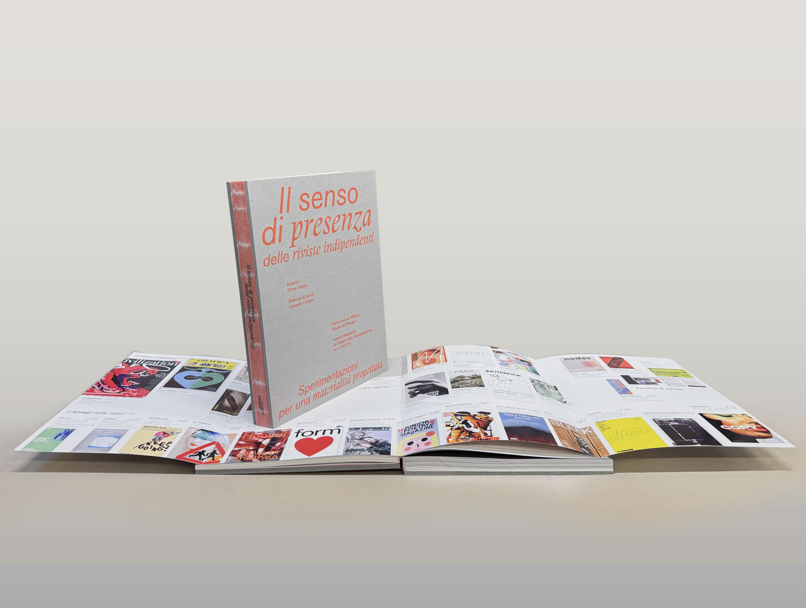
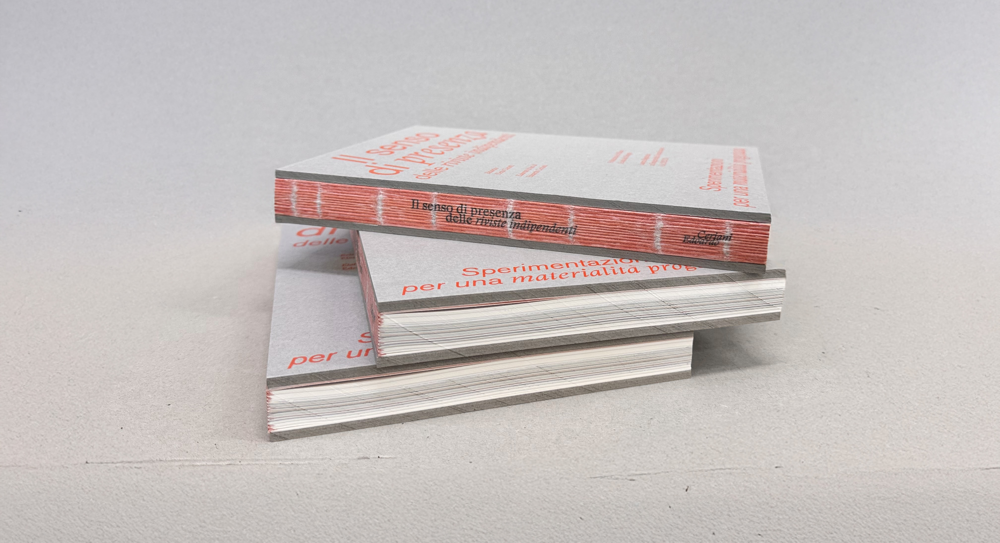
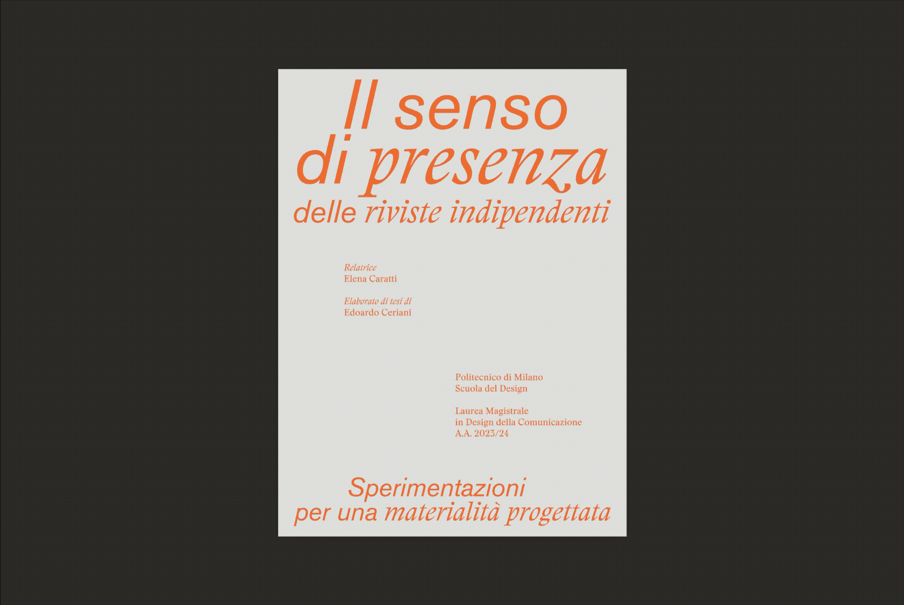
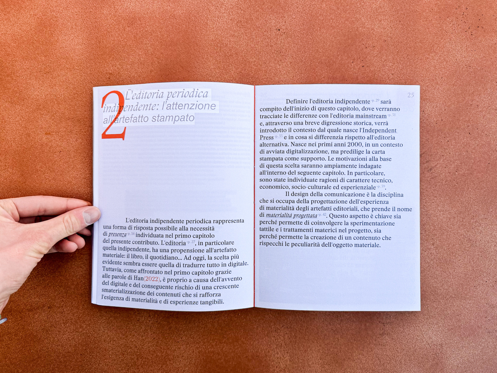
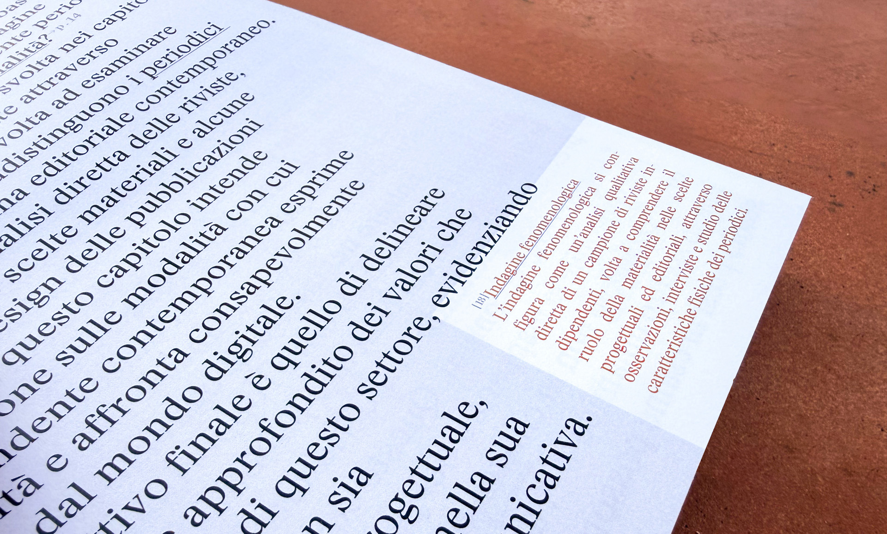
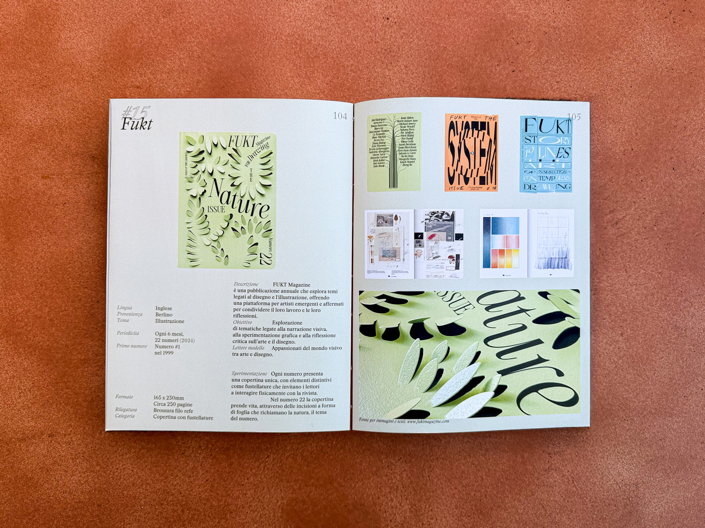
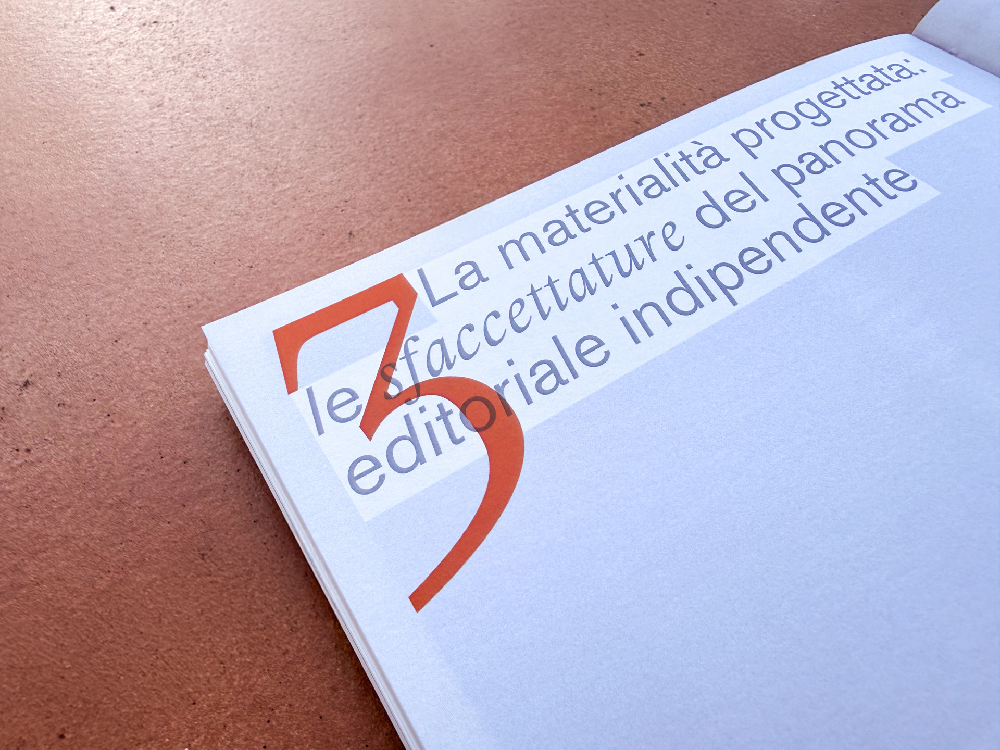
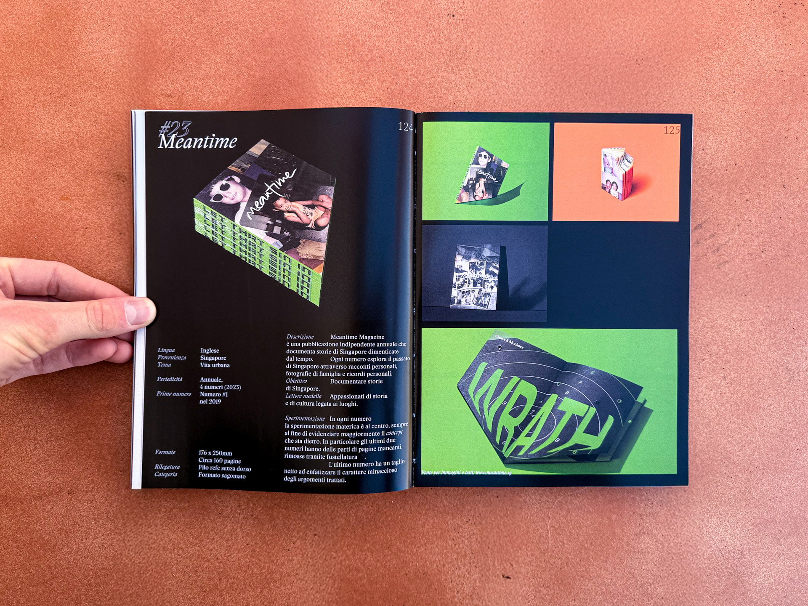
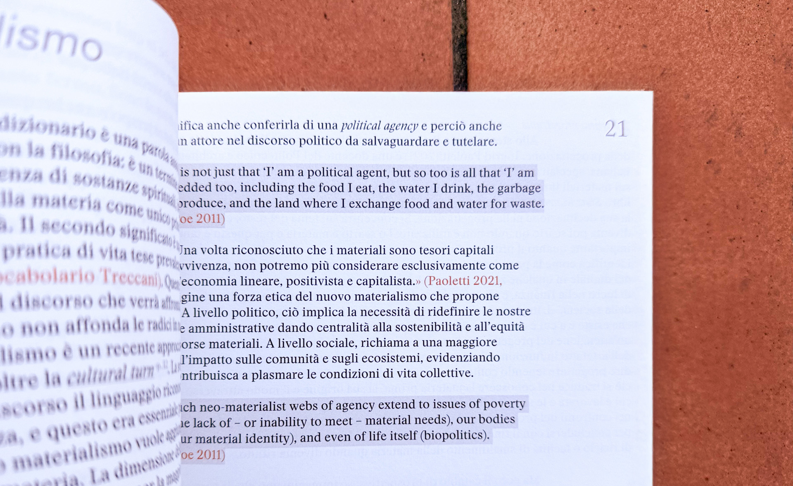

The meaning of presence in indie magazines
What role does the materiality of paper play in a context where digital communication is predominant? This question is rooted in a long-standing philosophical debate. Drawing on
Gumbrecht’s (2004) concept of “presence,” the term is introduced as the tangible dimension of the world that contributes to the production of meaning.
Independent publishing magazines choose print and, through material, tactile, and graphic experimentation, shape this sense of presence. Designing with materiality in mind means both allowing the magazine to express itself through its physical components and defining content in harmony with the material medium that hosts it, ultimately creating a holistic experience for the reader.








